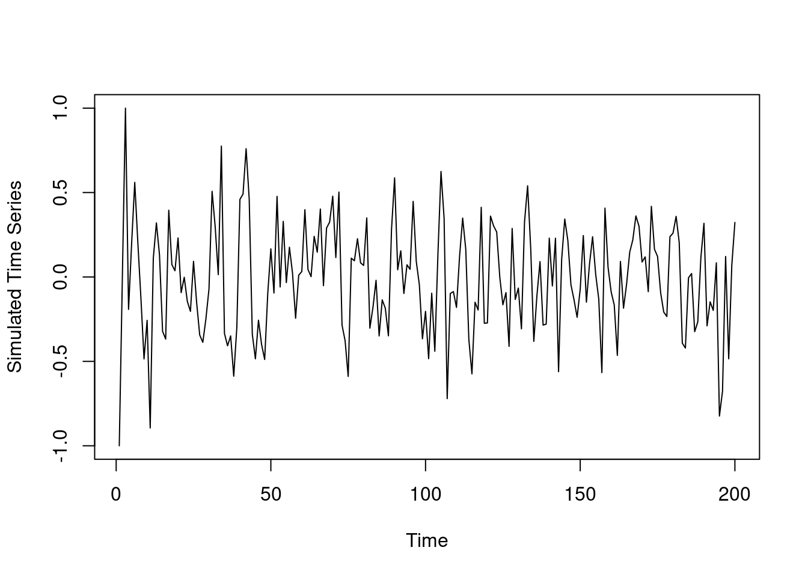

We generate some data from a three-component mixture of an AR(2) process. Specifically, given \(y_{1} = -1, y_{2} = 0, y_{3} = 1\), we generate \(y_{4:200}\) from the following distribution:
y =c(-1, 0, 1) # initial three valuesfor (i in4:200) {# Sample from a uniform distribution,# pick one of the components based on the mixing coefficientsset.seed(i) U =runif(1)if (U <=0.5) { y.new =rnorm(1, 0.1* y[i -1] +0.1* y[i -2], 0.25) } elseif (U >0.8) { y.new =rnorm(1, 0.3* y[i -1] +0.5* y[i -2], 0.25) } else { y.new =rnorm(1, 0.4* y[i -1] -0.5* y[i -2], 0.25) }# Append the new sample to the time series y =c(y, y.new)}plot(y, type ="l", xlab ="Time", ylab ="Simulated Time Series")

Figure 7.1: The simulated time series.
7.2 Setting the prior
We will fit a location and scale mixture of AR(2) processed with three components. That is, \(p = 2\) and \(K = 3\). Firstly, we set up the model by choosing prior hyperparameters. We use weakly informative priors for all parameters. That is, we set \(a_{1} = a_{2} = a_{3} = 1\), \(\mathbf{m}_{0} = \left(0, 0\right)^{\top}\), \(\mathbf{C}_{0} = 10\ \mathbf{I}_{2}\), and \(n_{0} = d_{0} = 1\). They are specified using the following code:
library(MCMCpack)
Loading required package: coda
Loading required package: MASS
##
## Markov Chain Monte Carlo Package (MCMCpack)
## Copyright (C) 2003-2026 Andrew D. Martin, Kevin M. Quinn, and Jong Hee Park
##
## Support provided by the U.S. National Science Foundation
## (Grants SES-0350646 and SES-0350613)
##
library(mvtnorm)p =2# order of AR processK =3# number of componentsY =matrix(y[(p+1):200], ncol =1) # y_{p+1:T}Fmtx =matrix(c( y[2:199], y[1:198] ),nrow =2, byrow =TRUE) # design matrix Fn =length(Y) # T - p## Prior hyperparametersm0 =matrix(rep(0, p), ncol =1)C0 =10*diag(p)C0.inv = (1/10) *diag(p)n0 =1d0 =1a =rep(1, K)
7.3 Sampling functions
Now we define the sampling function for all the parameters, using the posterior full conditional distribution we have derived.
## Set initial valuesbeta.cur =rep(0, p * K)L.cur =rep(1, n)omega.cur =rep(1/ K, K)nu.cur =rep(1, K)## Define placeholders to track values over timensim =20e3beta.mtx =matrix(0, nrow = p * K, ncol = nsim)L.mtx =matrix(0, nrow = n, ncol = nsim)omega.mtx =matrix(0, nrow = K, ncol = nsim)nu.mtx =matrix(0, nrow = K, ncol = nsim)
7.5 Sampler
nsim =20e3## Gibbs samplerfor (i in1:nsim) {set.seed(i)## Sample omega omega.cur =sample_omega(L.cur) omega.mtx[, i] = omega.cur## Sample L L.cur =sample_L(Y, Fmtx, beta.cur, omega.cur, nu.cur) L.mtx[, i] = L.cur## Sample nu nu.cur =sapply(1:K, function(k){sample_nu(k, L.cur)}) nu.mtx[, i] = nu.cur## Sample beta beta.cur =as.vector(sapply(1:K, function(k){sample_beta(k, L.cur, nu.cur)})) beta.mtx[, i] = beta.cur## Show iterationif (i %%1000==0) {print(paste("Number of iterations:", i)) }}
[1] "Number of iterations: 1000"
[1] "Number of iterations: 2000"
[1] "Number of iterations: 3000"
[1] "Number of iterations: 4000"
[1] "Number of iterations: 5000"
[1] "Number of iterations: 6000"
[1] "Number of iterations: 7000"
[1] "Number of iterations: 8000"
[1] "Number of iterations: 9000"
[1] "Number of iterations: 10000"
[1] "Number of iterations: 11000"
[1] "Number of iterations: 12000"
[1] "Number of iterations: 13000"
[1] "Number of iterations: 14000"
[1] "Number of iterations: 15000"
[1] "Number of iterations: 16000"
[1] "Number of iterations: 17000"
[1] "Number of iterations: 18000"
[1] "Number of iterations: 19000"
[1] "Number of iterations: 20000"